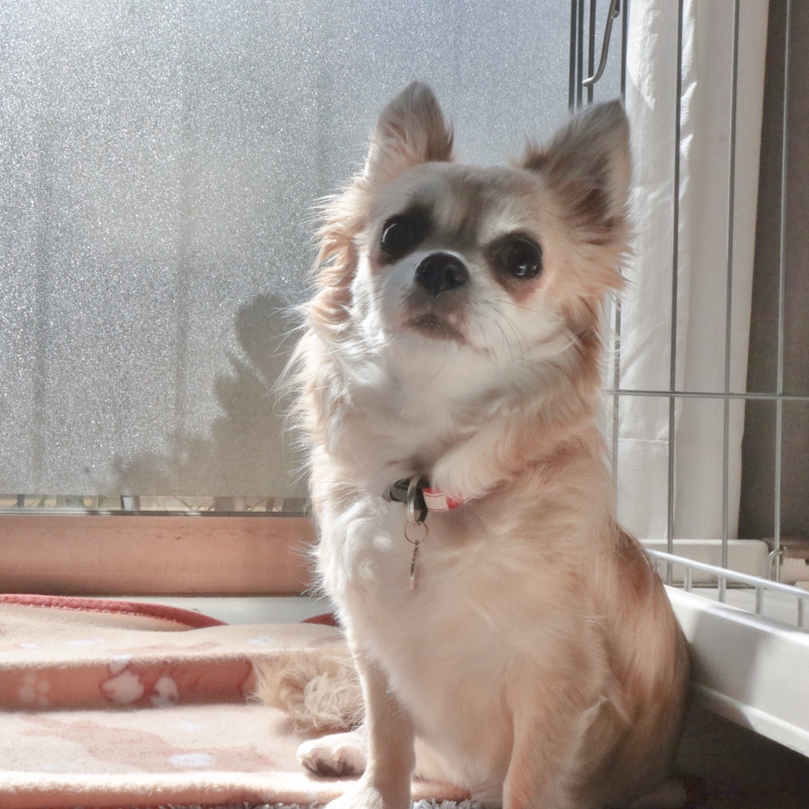

ABOUT
SATOYUについて紹介します.
2000年〜
SATOYUです！
神奈川県に生まれ、神奈川県で育った神奈川県民です.
小さい頃から「ものづくり」が好きでした.
幼い頃からいろんなことに挑戦、小学生の時の習い事は７つ!!!
神奈川県に生まれ、神奈川県で育った神奈川県民です.
小さい頃から「ものづくり」が好きでした.
幼い頃からいろんなことに挑戦、小学生の時の習い事は７つ!!!
2016年〜
高校時代はチアダンス部に所属し地域のイベントや運動部の応援をしていました.
チアダンス部の中でパフォーマンスの構成や振り付けを担当していました.
チアダンス部の中でパフォーマンスの構成や振り付けを担当していました.
2019年〜
大学では、システム開発や教育科学、心理学、電子工学など様々な分野を学習しています.
最近では、ゼミでシステム設計・開発・分析に力を入れています.
プログラミング言語も学習しており、実装経験があるのは、HTML/CSS/Javascriptです.
最近では、ゼミでシステム設計・開発・分析に力を入れています.
プログラミング言語も学習しており、実装経験があるのは、HTML/CSS/Javascriptです.
大学ではAGESTOCK実行委員会という学生団体に所属していました.
AGESTOCK実行委員会とはイベントを企画から実行まで学生だけで行う学生団体です,
その中でイベント内や各種SNSに流す映像を制作していました.
AGESTOCK実行委員会とはイベントを企画から実行まで学生だけで行う学生団体です,
その中でイベント内や各種SNSに流す映像を制作していました.
趣味・好きなこと

愛犬の「蘭子」が大好きです.
チワワの女の子です.大学一年生の時から一緒に住んでいます.
休日はドックカフェに行ったり、ドライブに連れて行ったりしています.
チワワの女の子です.大学一年生の時から一緒に住んでいます.
休日はドックカフェに行ったり、ドライブに連れて行ったりしています.
趣味は映画鑑賞です.家で見るのも好きですが、休日に「朝映画」をしに映画館に行くことが多いです.
映画だけでなくドラマやアニメもよく見るのですが、特に韓国作品が好きで、今まで40作品以上観ています.
映画だけでなくドラマやアニメもよく見るのですが、特に韓国作品が好きで、今まで40作品以上観ています.